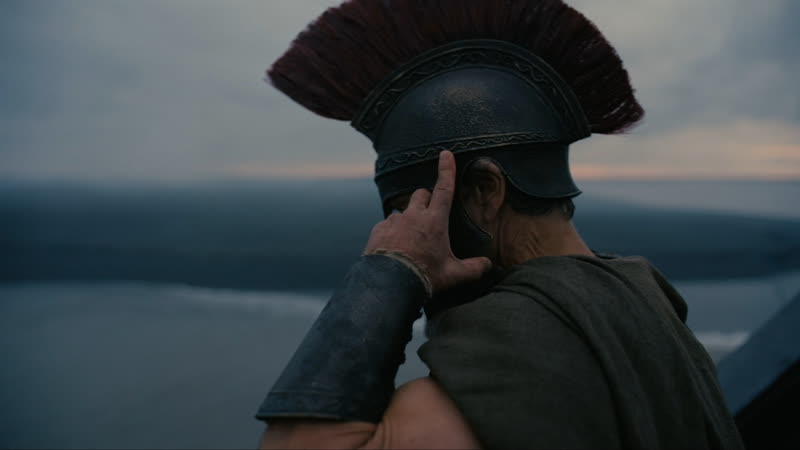
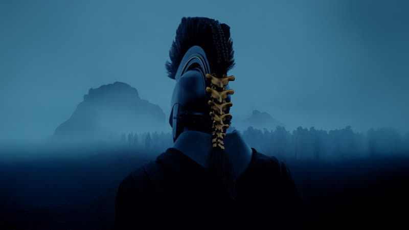
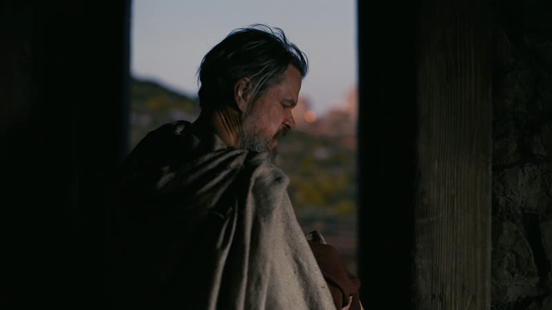
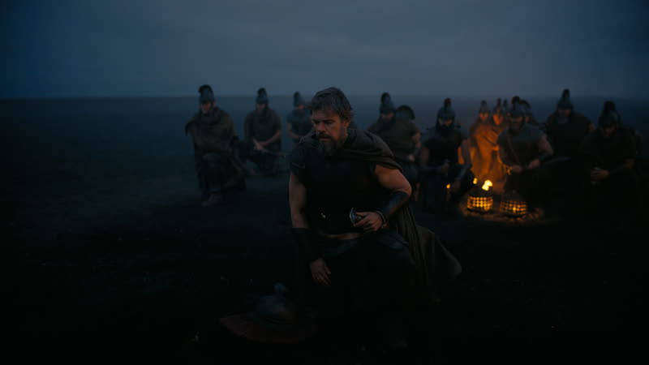
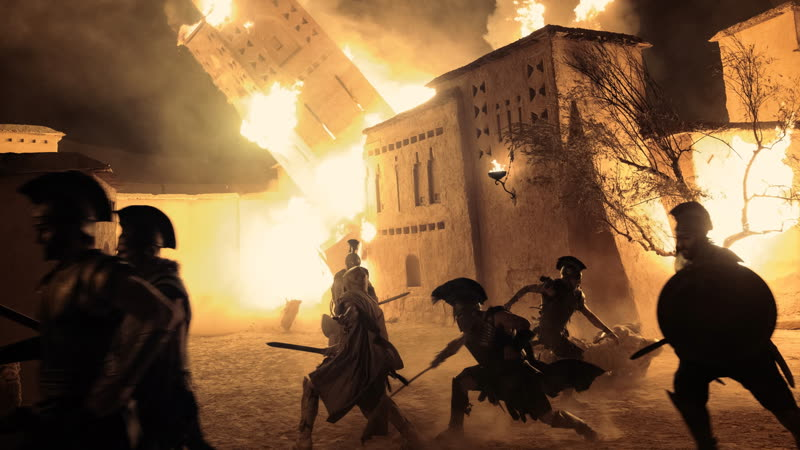

2026
The Odyssey
Odysseus tries to get home from Troy, and the film tells the war and the voyage out of order through memory and other people's accounts.
How it plays with time
The present-day strands are Ithaca, where Telemachus and Penelope face the suitors, and Odysseus on Ogygia. The Trojan War and the voyage home arrive as memories and as competing accounts told by different characters, cut in without dates or place titles. The same events, such as the wooden horse, are shown from more than one teller, and Odysseus's own version comes last. source
Themes
- Memory
- On Calypso's island Odysseus is dulled by the lotus and loses his past for years. Her prompting is what starts the flashbacks to the war and the voyage, so recovering what he did is the thing the story is pulling toward. source
- Guilt
- Late in the film Odysseus, in disguise, tells Penelope about the sack of Troy and admits he broke the laws of the gods. The earlier fragments of the war resolve into his own admission. source
- Deception
- Back on Ithaca Odysseus hides as a beggar and uses an assumed name. Earlier the wooden horse is told as a clever ruse in one account and a shameful act in another, so the audience is deceived by tellers too. source
- Fathers and children
- Telemachus travels to Sparta to learn what happened to his absent father and hears the horse story from Menelaus. The son builds his picture of Odysseus from other men's accounts. source
- Time
- The film opens mid-feast with a bard telling of the horse, cuts to the horse itself, then drops back to Ithaca. Dates and places are never captioned, so the audience has to work out from context where in time it is. source
Where it came from
- Nolan traces the film to losing the chance to direct a Troy project years ago, and he stayed drawn to that world and the wooden horse. Nolan source
- He grew up on Ray Harryhausen-style myth films and felt none had been made at IMAX-level blockbuster scale. Nolan source
- Per Wikipedia, Nolan named Tarkovsky's Andrei Rublev and Kurosawa's Ran as major influences on visual style and tone, citing a June 2026 New York Times interview. Nolan source
- Search-result summaries say Nolan credits the Star Wars opening text for the film's framing text and wanted the version of the story he remembered from a school play. Not fetched. Nolan unverified
Stills





Stills © their studios, used here for commentary and criticism.
People who keep coming back
- Emma Thomas, producer (unverified for this film): also following, memento, insomnia, batman begins, the prestige, the dark knight, inception, the dark knight rises, interstellar, dunkirk, tenet, oppenheimer
- Hoyte van Hoytema, director of photography: also interstellar, dunkirk, tenet, oppenheimer
- Jennifer Lame, editor: also tenet, oppenheimer
- Ludwig Göransson, composer: also tenet, oppenheimer
- Matt Damon, Odysseus: also interstellar, oppenheimer
- Anne Hathaway, Penelope: also the dark knight rises, interstellar
- Robert Pattinson, Antinous: also tenet
How it was received
Critics were strongly positive: Wikipedia says it is Nolan's best-rated film on Rotten Tomatoes. Praise went to scale and spectacle. Complaints included Damon's modern feel, little focus on the gods and hard-to-hear dialogue. CinemaScore was an A. Metacritic 88 source. Rotten Tomatoes 94% source.
Audience opinion is more split than critics'. Letterboxd reviews sampled ranged from five stars to 2.5, with the writing the main complaint. TMDB users rate it about 8 out of 10 but reviews are polarised. Box office reached $1.791 billion by 20 October 2026, Nolan's biggest.
Three things most people miss
- Recurring images of Odysseus on temple steps and a stone head look random until the end, when their meaning is made clear. source
- The wooden horse is told three times with different tones (heroic, dishonourable, tragic) depending on who is speaking, so the structure is about unreliable telling. source
- Homer's poem is itself non-linear, with much of the voyage told by Odysseus in recollection, so the film's structure follows the source rather than departing from it. Taken from a search summary of the Cornell Sun piece, not fetched. source
Cast
Matt Damon as Odysseus; Tom Holland as Telemachus; Anne Hathaway as Penelope; Robert Pattinson as Antinous; Lupita Nyong'o as Helen of Troy and Clytemnestra.